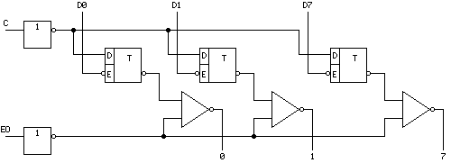
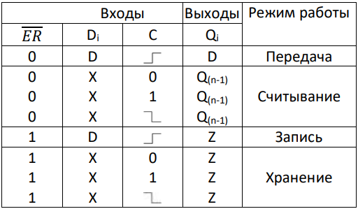
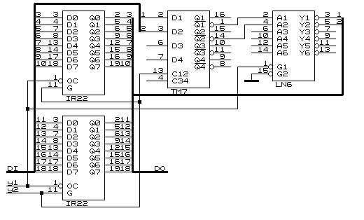

Описание микросхемы К555ИР2
Микросхема 555ИР22 представляет собой параллельный восьмиразрядный регистр-защелку отображения данных, выходные буферные усилители которого имеют третье Z-состояние. УГО данного регистра выглядит следующим образом:
Внутреннее устройство приведено ниже.
Схема регистра состоит из двух частей. Первая часть – это восемь нетактируемых D-триггеров со входом параллельной записи С. Пока С=1, данные от параллельных входов D-триггеров D0…D7 отображаются на выходах 0…7, т.е. проходят через первую часть регистра свободно. При С=0 происходит защелкивание данных в D-триггерах.

Вторая часть устройства управляется по входу разрешения EO (Enable Output). Ее восемь ключевых выходных усилителей имеют третье Z-состояние. Если ЕО=0, данные из триггеров регистра пройдут на выходы 0…7. Если ЕО=1, выходы разомкнутся. Последнее свойство позволяет подключать данный регистр к общей для ряда внешних устройств восьмиразрядной шине данных.
Таблица истинности выглядит следующим образом:

Пример использования К555ИР22 с описанием работы
На представленной схеме имеются: шина входных данных DI, шина выходных данных DO и два управляющих сигнала y1 и y2. Сигнал y2 управляет занесением информации в регистр: при низком уровне этого сигнала регистр находится в режиме хранения и не воспринимает информацию на шине DI, при высоком уровне на выходной шине DO повторяется вся изменяющаяся информация шины DI (регистр построен на D триггерах-защелках). Запоминание информации происходит в момент перехода 1- 0 сигнала y2. Сигнал y1 управляет состоянием выхода регистра: при y1= 0 выходы регистра находятся в третьем стабильном состоянии, при y1=1 на выходах воспроизводится информация, записанная в регистре.

Параллельный регистр
Данная схема позволяет несколько подобных регистров подключать к одному входу (например сумматору), т. к. в момент передачи информации на сумматор выходы только одного регистра нужно сделать активными, а выходы остальных регистров нужно перевести в третье стабильное состояние соответствующими значениями управляющих сигналов.